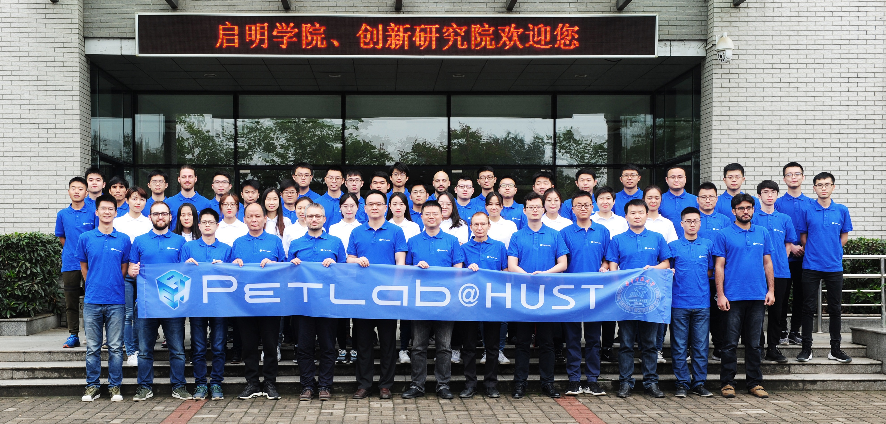

Education Opportunities
PETLab extends an invitation to all undergraduate students carrying the spark of scientific research. Regardless of experience or seniority, if you harbor passion, dreams, courage, and a sense of responsibility for research, you are our fellow traveler.
We hope you possess:
- A background in materials, chemistry, optoelectronic engineering, physics, electronics, automation, computer science, telecommunications, biomedical engineering, biology, pharmacy, clinical medicine, radiology, nuclear medicine, or related fields.
- Teamwork spirit and capabilities, strong communication skills, and a commitment to quality and results.
- Professional English listening, speaking, reading, and writing skills, with fluent oral expression.
- A strong interest in scientific research.
- Values of integrity, self-discipline, self-reliance, and perseverance.
After joining the team, undergraduates will be integrated into the internal RA training system, allocated corresponding research resources, and have opportunities to participate in global research exchanges in locations such as Hefei, Wuhan, Shenzhen (China), Chicago (USA), Pozzuoli/Caserta (Italy), and Magdeburg (Germany).
Student Opportunity
For Master's and PhD admissions, please see Faculty Profiles.
We welcome candidates who are honest, self-driven, passionate about research, mathematically strong, and good communicators. Please email us in advance with your transcript and CV (we do not admit students who simply seek a graduate degree without research motivation).